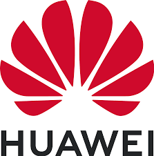

Riccardo Vecchi Cloud Architect | IT Solution Architect
Riccardo Vecchi Cloud Architect | IT Solution Architect
Roma, Italia
Rome, Italy
Chi SonoAbout Me▼
Da sempre appassionato di informatica, automazione e il mondo dei computer in generale, sono un professionista orientato ai risultati con oltre 5 anni di esperienza nella consulenza e progettazione ICT. Problem solver efficace, con un approccio pratico e capacità di comunicazione ben sviluppate a tutti i livelli. Abituato a lavorare in ambienti multinazionali e multiculturali, attualmente sono focalizzato nell'approfondire tecnologie Cloud.
Always passionate about IT, Automation, and the computers' world in general, I am a results-oriented professional with over 5 years of experience in ICT consulting and design. I am an effective problem solver with a practical approach and well-developed communication skills at all levels. Used to working in multinational and multicultural environments, I am currently focused on deepening my knowledge of Cloud technologies.
Esperienza LavorativaWork Experience▼
Cloud Architect / Technical Presales
11/2022 - Present
Progettazione e implementazione architetture e soluzioni Cloud su piattaforme pubbliche (GCP, AWS, Azure) e private (TIM Cloud basato su VMware), assicurando l'efficienza e la scalabilità delle infrastrutture IT.
Quotazioni e stime economiche per le soluzioni proposte, analizzando costi e benefici per garantire la migliore soluzione tecnologica ed economica per il cliente.
Mercato di Riferimento Private italiano ed europeo, in particolare aziende del segmento Top e Large.
Sviluppo, innovazione e aggiornamento continuo sulle ultime tecnologie e tendenze del cloud computing, contribuendo allo sviluppo di nuove soluzioni e all'innovazione dei servizi offerti. Sviluppo di soluzioni di Hybrid Cloud e Disaster Recovery.
Cloud Architecture Design and cloud architecture implementation on public platforms (GCP, AWS, Azure) and private ones (TIM Cloud based on VMware), ensuring efficiency and scalability of IT infrastructures.
Quotations and Cost Estimates for proposed solutions, analyzing costs and benefits to ensure the best technological and economic solution for the customer.
Italian and European Private as Reference Market, particularly companies in the Top and Large segment.
Development and Innovation and continuously updated on the latest technologies and trends in cloud computing, contributing to the development of new solutions and the innovation of the services offered. Designo of hybrid cloud and Disaster Recovery solutions.
 IT Solution Architect
03/2022 - 11/2022
Solution Architect nel dominio ICT Service per operatori di rete italiani.
Interfaccia cliente per pre-vendita di servizi e presentazione di soluzioni E2E (fino a livello CXO).
Responsabile dello sviluppo e personalizzazione di PoC (Proof of Concept) del portfolio Huawei.
Proprietario dell'Arrangement di Supporto alle Offerte e della Proposta di Costo della Soluzione di Servizio.
Solution Architect within ICT Service domain for Italian Network Carriers.
Customer interface for Service Pre-Sale and E2E Solution presentation (up to CXO level).
Responsible for PoC (Proof of Concept) development & customization of Huawei portfolio.
Owner for the Bidding Support Arrangement and Service Solution Cost Proposal.
Technical Director
03/2021 - 11/2022
Gestione e leadership di un piccolo team distribuito.
Responsabile della Soddisfazione del Cliente del progetto.
Responsabile per Problemi Tecnici, Escalation Tecniche, Ottimizzazione dei Costi e Operazioni di Sicurezza della Rete secondo il Processo Huawei.
Completato con successo la migrazione di una piattaforma cloud legacy a una soluzione on-premise (11 server, oltre 50 VM, configurazione della rete, virtualizzazione, installazione software, integrazione di terze parti).
Management and lead of a small and distributed team.
Accountable for project Customer Satisfaction.
Responsible for Technical Issues, Technical Escalations, Cost Optimization, and Network Security Operations according to the Huawei Process.
Successfully migrated a cloud legacy platform to an on-premise solution (11 servers, 50+ VMs, network configuration, virtualization, software installation, 3rd party integration).
Software Development Engineer
09/2019 - 03/2021
Interfaccia con il cliente per lo sviluppo di nuove funzionalità su Automazione/Trasformazione Digitale/Orchestrazione della Rete.
Sviluppo back-end e front-end dei servizi di Trouble Ticket e Fault Management (FM) su una piattaforma ospitata su AWS, AUTIN (AUTomation INtelligence).
Servizio di sysadmin e risoluzione problemi in chiamata per garantire il 100% di disponibilità della piattaforma.
Integrazione di 10+ EMS (ad es. NOKIA, HUAWEI, CISCO, ZTE, ZABBIX, INFINERA) basata su protocolli CORBA e SNMP con FM basato su IBM Netcool.
Sviluppo e personalizzazione di oltre 4 dashboard di monitoraggio KPI.
Customer interface for new features development on Automation/Digital Transformation/Network Orchestration.
Back-end and front-end development of Trouble Ticket and Fault Management (FM) services on an AWS hosted platform, AUTIN (AUTomation INtelligence).
Sysadmin and on-call troubleshooting service to guarantee 100% platform availability.
10+ EMS Integration (e.g. NOKIA, HUAWEI, CISCO, ZTE, ZABBIX, INFINERA) based on CORBA and SNMP protocols with IBM Netcool-based FM.
Development and customization of 4+ KPI tracking dashboards.
PubblicazioniPublications▼
Compressing deep quaternion neural networks with targeted regularization
08/07/2020, CAAI Transactions on Intelligence Technology
Abstract: Le reti neurali ipercomplesse trovano applicazioni in molteplici campi, dalla ricostruzione di immagini all'elaborazione audio 3D. Progettando nuove tecniche di regolarizzazione, gli autori mostrano come minimizzare il numero di connessioni e neuroni superando gli approcci classici, risultando in modelli più piccoli e veloci, adatti per applicazioni a basso consumo energetico e in tempo reale.
Abstract: Hyper-complex NNs find applications in multiple fields, from image reconstruction to 3D audio processing. By designing new regularization techniques, the authors show how to minimize the number of connections and neurons outperforming classical approaches, resulting in smaller and faster models, suitable for low-power and real-time applications.
ProgettiProjects▼
Telegram Bot - HarmonyAI
2024
Un assistente AI Bot di Telegram che offre supporto terapeutico su richiesta. Con intelligenza emotiva, avanzate competenze linguistiche ed empatia, fornisce consulenza, ascolto attivo e risorse per sfide emotive, relazionali e psicologiche. Il suo obiettivo è offrire supporto incondizionato, promuovere il benessere mentale, suggerendo azioni per il miglioramento personale. Attualmente basato sul modello di OpenAI GPT-4o e ospitato su Google Cloud Run.
A Telegram AI Bot that provides therapeutic support on demand. With emotional intelligence, advanced linguistic skills, and empathy, it offers counseling, active listening, and resources for emotional, relational, and psychological challenges. Its goal is to provide unconditional support, promote mental well-being, and suggest actions for personal improvement. Currently based on the OpenAI GPT-4o model and hosted on Google Cloud Run.
App Android "Prontuario del Farmaco"
Android App "Drug Handbook"
2019
Un'app per leggere i foglietti illustrativi dei farmaci basata sul database AIFA (Agenzia Italiana del Farmaco). Permette di localizzare le farmacie vicine attraverso le API di Google Places e impostare gli orari per l'assunzione dei farmaci. È stato sviluppato un back-end in Node.js per la registrazione degli utenti e la sincronizzazione dei dispositivi.
An app to read medical drug leaflets based on the AIFA (Italian Medicines Agency) database. It allows locating nearby pharmacies through Google Places APIs and setting schedules for taking drugs. A back-end in Node.js was developed for user registration and device synchronization.
3D game – Interstellar Horizon
2018
Un gioco 3D per browser, in cui l'utente guida un'astronave nel tentativo di sopravvivere e guadagnare punti evitando diverse minacce come asteroidi e buchi neri. Il progetto è un programma WebGL sviluppato con tecnologie standard come HTML5 e JavaScript.
A 3D browser game, in which the user drives a spacecraft in an attempt to survive and gain points by avoiding several threats like asteroids and black holes. The project is a WebGL program developed with standard technologies like HTML5 and JavaScript.
SqueezeNet Neural Network
2018
Riprodotto con successo i risultati di un innovativo paper su "SqueezeNet", una nuova architettura che permette di creare reti neurali 50 volte più piccole dello stato dell'arte senza compromettere le prestazioni. Ho utilizzato il framework TensorFlow e il dataset CIFAR-10 per i test.
Successfully reproduced the results of an innovative paper about "SqueezeNet", a novel architecture enabling 50x smaller NNs than the state-of-the-art without hurting performance. Used the TensorFlow framework and the CIFAR-10 dataset for testing.
Bayes filter for Android Malware family classification
2018
Un filtro Naïve-Bayes sviluppato in Java e addestrato sul dataset Drebin. Quest'ultimo raccoglie i metadati di malware Android. Il modello ha raggiunto un'accuratezza del 97% su campioni non visti.
A Naïve-Bayes filter developed in Java and trained on the Drebin dataset. The latter collects Android malware metadata. The model achieved an accuracy of 97% over unseen samples.
Obstacle-avoiding Robot with Android and Python Clients
2018
Costruito un robot Arduino a 2 ruote che può essere controllato a distanza tramite Bluetooth o esplorare autonomamente un'area evitando ostacoli tramite un sensore ultrasonico. Per il controllo del movimento viene utilizzato un Motor Shield L298N (dual-bridge H). Ho sviluppato un'app Android e uno script Python per controllarlo.
Built a 2-wheel Arduino robot that can be radio-controlled by Bluetooth or autonomously explore an area avoiding obstacles via an ultrasonic sensor. For motion control a Motor Shield L298N (dual-bridge H) is used. I developed an Android app and a Python script to control it.
Linux Mail Slots
2017
Sviluppo di un modulo del kernel Linux altamente efficiente che fornisce un servizio simile ai mailslot di Windows, cioè un driver per file di dispositivo speciali accessibili secondo la politica FIFO.
Development of a highly efficient Linux kernel module providing a service similar to Windows mailslots, i.e., a driver for special device files accessible according to FIFO policy.
Competenze TecnicheTechnical Skills▼
Cloud ComputingGCPAWSAzureLinuxSysAdminKubernetesDockerInfrastructure As CodeAlgorithmsData StructuresCPythonJavaJavaScriptPHPNode.jsAndroidWeb DevelopmentRESTSOAPArtificial IntelligenceDeep LearningNeural NetworksComputer VisionTensorFlowPytorch
Laurea Magistrale - Engineering in Computer Science
Università degli Studi "La Sapienza", Roma
2016 - 2019
Voto finale: 110/110 cum laude
Tesi: "Compression Techniques for Deep Quaternion Neural Networks"
Laurea Triennale - Ingegneria Informatica e Automatica
Università degli Studi "La Sapienza", Roma
2011 - 2016
Voto finale: 96/110
Tesi: "Servizio Elenco Telefonico Remoto - Architettura Client/Server"
Master of Science - Engineering in Computer Science
Sapienza University of Rome
2016 - 2019
Final Grade: 110/110 cum laude
Thesis: "Compression Techniques for Deep Quaternion Neural Networks"
Bachelor - Computer and Automation Engineering
Sapienza University of Rome
2011 - 2016
Final Grade: 96/110
Thesis: "Remote Phone Directory Service - Client/Server Architecture"